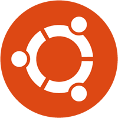

Linux Dağıtımları
UBUNTU
Yukarı Çık
Ubuntu, Linux tabanlı ve Debian geleneğini temel alan bir işletim sistemidir. Ubuntu'nun hedefi ortalama bilgisayar kullanıcılarına kullanımı ve kurulumu oldukça kolay, güncel ve güvenli bir işletim sistemi sunmaktır. Ubuntu aldığı %30'luk oyla, 2007 yılında masaüstü kullanımında en gözde Linux dağıtımı seçilmiştir. 2008 yılından beri DistroWatch ilk 100 listesinde birincidir. Bir Ubuntu türevi olan Linux Mint de aynı listenin içinde ilk üçte bulunmaktadır. Ubuntu, 12.000.000'dan fazla kullanıcısıyla dünyanın en gözde Linux dağıtımıdır.
Ubuntu, herkesin özgürce kullanabildiği; yayınlamakta, kopyalamakta veya kodlarını özgürce değiştirip geliştirebildiği yazılımlardan oluşur. Bunların çoğunluğu GNU Genel Kamu Lisansı ile güvence altına alınmış, özgür yazılım / açık kaynak yazılımlardır.
Ubuntu Güney Afrika'lı girişimci Mark Shuttleworth'e ait Canonical Ltd.'nin sponsorluğunda geliştirilmektedir.Canonical, Ubuntu'yu satarak kâr etmektense, ücretsiz dağıtır. Şirket, Ubuntu'yu kullanan kuruluşlara isterlerse teknik destek satarak gelir sağlar. Canonical Ubuntu'yu açık kaynak kodlu ve özgür yazılım olarak sunduğu için, dünya çapında bu işletim sistemini kullanan ve geliştiren gönüllü kullanıcıları sayesinde, tüm bir işletim sistemini tek başına geliştirmek zorunda kalmaz.Tüm Linux severlerin yaptığı geliştirmeler, onu temel alan Ubuntu'yu da doğrudan geliştirir.
Canonical, Ubuntu dışında resmi olarak üç farklı Ubuntu-benzeri işletim sistemini destekler: Kubuntu, Edubuntu, Ubuntu Sunucu Sürümü (Server Edition). Ayrıca dört farklı Ubuntu benzeri işletim sisteminin geliştirilmesine de katkı sunar: Xubuntu, Gobuntu, Ubuntu Studio, Mythbuntu. Canonical altı ayda bir Ubuntunun yeni sürümünü çıkarmakta, her sürüm için de on sekiz ay boyunca güvenlik yamaları, geliştirmeleri ve yazılım güncelleştirmeleri desteği sunmaktadır. Ayrıca LTS (Uzun Süreli Destek, Long Term Support) adındaki sürümleri üç yıl boyunca masaüstü bilgisayarlar, beş yıl da sunucu bilgisayarlar için desteklenir ve iki yılda bir çıkar. Ubuntu'nun en son güncel sürümü 11.04 Natty Narwhal 28.04.2011 tarihinde yayımlanmıştır.
FEDORA
Yukarı Çık
Fedora, Fedora Projesi'nin ürettiği Açık Kaynak kodlu bir Linux dağıtımıdır. Red Hat Linux'un devamı olarak adlandırılabilecek Fedora Core kar amacı gütmeyen bir organizasyon tarafından geliştirilmektedir. Her ne kadar bir zamanlar efsane olan Red Hat kadar büyük bir popülerliği yoksa da Linux dünyasının en sevilen ve en başarılı dağıtımlarından biridir. Mandriva veya Suse kadar olmasa da oldukça güncel paketlere sahip Fedora onlardan daha sağlam ve kararlı bir dağıtım olması ile ünlüdür. Fedora, varsayılan olarak GNOME masaüstü kullanır ayrıca KDE, Xfce ve LXDE masaüstlerini de seçenek olarak sunar.
DEBIAN
Yukarı Çık
Debian, Debian Projesi kapsamında dünyanın çeşitli bölgelerindeki gönüllüler tarafından hazırlanan; GNU/Linux, GNU/Hurd gibi farklı çekirdek seçeneklerine dayalı tamamen özgür bir Linux dağıtımıdır. En yaygın GNU/Linux dağıtımlarından biri konumundaki Debian aynı zamanda; Mepis, Ubuntu, Yoper, Knoppix, Libranet, Linspire, Xandros ve Adamantix gibi birçok GNU/Linux dağıtımına da kaynak teşkil etmekte ve Google başta olmak üzere iyi tanınan birçok Web sitesinde de tercih edilmektedir. Debian, farklı işletim sistemi çekirdekleriyle birlikte i386, AMD64, PowerPC, SPARC, DEC Alpha, ARM, MIPS, HPPA, S390, IA-64 gibi çok sayıda donanım platformunda da çalışabilmektedir. Debian 4.0'ın ekran görüntüsü
Desteklediği donanım ve çekirdek zenginliğinin yanı sıra Debian'ı diğer dağıtımlara nispetle özgün kılan en önemli husus, dağıtım kapsamındaki yazılımların bütünüyle özgür lisans şartlarına sahip olması, yazılım özgürlüğünü denetlemek ve sürekli kılmaya yönelik bir Debian Sosyal Sözleşmesi'nin bulunmasıdır.
1993 yılında Purdue Universitesi'nde bir öğrenci olan Debian'in kurucusu Ian Murdock ; "Debian Manifesto" isimli yazısında Debian'ın misyon ve felsefesini anlatmıştır. Bu doğrultuda Debian İnternet üzerindeki ilk demokratik topluluklardan birini temsil etmektedir. 1996 yılında Ian Murdock'in yeri Bruce Perens'e geçerken; Ian Murdock halen Debian içerisinde görevlerine devam etmektedir.
"Debian" adı, Ian Murdock'ın sevgilisi Debra'nın Deb'i ve Ian'ın ismi yanyana getirilerek oluşturulmuştur.
Debian'da, kendine özgü bir paket (uygulamalar) biçemi olan .deb kullanılmaktadır. Paket yönetimi için alt seviyede dpkg ve buna eşlik eden bir dizi araçla birlikte
LINUX MINT
Yukarı Çık
Linux Mint Ubuntu ve Debian'ı temel alan ancak Ubuntu ile yollarını ayırma kararı alan bir Linux dağıtımıdır. İrlanda kökenli bir dağıtım olma özelliğini 5. sürümü ile geri plana atmış olan Linux Mint artık uluslararası topluluk tarafından geliştirilmeye başlanmıştır. DistroWatch’ın sayfasında Linux Mint uzun zamandır en popüler Linux dağıtımları arasında ilk ikide yerini korumaktadır.
Ubuntu ve Debian'ın aksine içerisinde son kullanıcı için gereken bütün araçları barındırır. Ubuntu ABD yasaları gereği, Debian ise GNU felsefesi yüzünden codec, flash, mp3 çalıcı gibi uygulamaları içerisinde barındırmaz. İstenirse bu dağıtımlara da gerekli bileşenler yüklenebilir.
Linux Mint, 11. sürümü ile birlikte içerisinde kodek ve multimedia paketleri bulunmayan bir sürümde hazırlamaya başlamıştır. Bu sürümü kurarken kodek ve multimedia paketlerini tek tıkla İnternet üzerinden çektirip kurdurabilirsiniz. Bu özellik tıpkı Ubuntu ve Debian Linux dağıtımlarında olduğu gibi kurulumda seçmeli hale getirilmiştir.
OPEN SUSE
Yukarı ÇıkSUSE, (telaffuzu /suse/ olmakla beraber sıklıka /suzi/ şeklinde de okunur) Almanya'da hazırlanmakta olan bir Linux dağıtımıdır. Şirket, Novell Inc.'e aittir. SUSE, aynı zamanda, Masaüstü Linux Birliği'nin (ing. Desktop Linux Consortium) kurucu üyesidir. SUSE'de YaST2 adlı yükleme ve yönetme programı; sabit disk bölümleme, sistem
ayarları, RPM paket yöneticisi kullanımı, güncelleme, yerel ağ ayarları, kullanıcı yönetimi ve fazlasını bütünleşik bir arayüzle gerçekleştirebilir. 10.1 sürümünden itibaren Suse, Zen-Updater adlı ikinci bir yükleme programını da bünyesinde barındırmaktadır. Bu yazılım, ikinci bir yükleyici olarak kullanılabileceği gibi, Suse-updater yerine masaüstü güncelleme uyarılarını da verir.
SUSE yükleme sırasında NTFS bölümleri yeniden boyutlandırıp kullanabilir. Bu sayede eski Windows 2000 veya Windows XP yüklemeleriyle beraber çalışabilir. SUSE birçok OEM masaüstü ve dizüstü bilgisayar ile gelen modemleri de destekler. (Bu modemler sadece Windows'a özel yazılımla çalışabilecek şekilde üretilmiştir.)
Kullanıcı YaST2 ile KDE veya GNOME masaüstü ortamları, Window Maker veya Blackbox pencere yöneticileri arasında seçim yapabilir. SUSE; K3B (CD/DVD yazıcı), Amarok (ses oynatıcı), Kaffeine (video oynatıcı) gibi çeşitli çoklu ortam yazılımlarıyla gelir. OpenOffice.org ve diğer yaygın dosya türlerini (PDF gibi) okuma ve yazmaya olanak sağlayan yazılımlar içerir. Telif hakkı sorunları nedeniyle, mp3 ve avi gibi tescilli çözücüler için destek sağlamaz. Ancak bu sorun internet üzerinden yüklenecek paketlerle aşılabilir.
PARDUS
Yukarı ÇıkPardus, Türkiye'de TÜBİTAK tarafından geliştirilen bir GNU/Linux dağıtımı olan işletim sistemi. Pardus'un bugüne kadar yayınlanmış 5 ana sürümü ve 9 ara sürümü mevcuttur. Bunlara ek olarak 2 kurumsal sürümü vardır. 2003 yılının önemli bir bölümünde ulusal bir dağıtımın gerekliliği, dünyada benzer uygulamalar, yazılım sanayisinin mevcut durumu ve eğilimleri araştırıldı. Ülkenin bilgi teknolojisi alanındaki insan kaynağı, yerel yazılım sanayisinin yetenekleri ve rekabet unsurları incelendi. Tüm bulgular ışığında, 2003 yılı yazında, bir ulusal işletim sistemi dağıtımı oluşturmanın yerinde bir karar olduğu sonucuna varılarak somut düzeyde planlama işine girişildi.
Mevcut işletim sistemleri, başta Linux olmak üzere incelendi, açık kaynak yazılım metodolojisi (yöntem bilimi) ve felsefesi ayrıntılı olarak çalışıldı. Hedef, bir dağıtım oluşturmanın ötesinde, bu dağıtımı sürekli kılabilecek düzenlemeci yapıyı da kurmak olduğundan yazılım sanayisinde, özellikle açık kaynak çerçevesinde, kullanılabilecek iş örnekleri irdelendi.
Bu incelemeler sonrasında, 2003 yılı sonbaharında, Linux temelli, açık kaynaklı, olabildiğince GPL lisanslama yöntemini kullanan bir işletim sistemi dağıtımı oluşturulmasına karar verildi.
Pardus Projesi'nin hayata geçmesi, 2004 yılı başında teknik ekibin çekirdeğinin oluşturulmasıyla başladı. Bu aşamada Türkiye'nin Linux geçmişi, mevcut ve planlanan dağıtımlar, açık kaynak ve Linux camiası ve girişimleri de göz önüne alınarak, var olan bilgi birikimi ve deneyimden en üst düzeyde yararlanmanın yolları arandı. Sonuçta ulusal işletim sistemi geliştirilmesinde görev alması en uygun kişiler Türkiye'nin dört bir yanından seçilerek TÜBİTAK/UEKAE bünyesinde bir araya geldiler.
2004 yılının önemli bir kısmı teknik seçeneklerin değerlendirilmesi ile geçti. Farklı Linux dağıtımları incelendi, mevcut dağıtımlardaki eksiklikler, olası gelişim alanları, yapılması gerekenler ve bunların iş gücü ve kaynak gereksinimleri irdelendi. Hedef kitlenin kim olacağı üzerinde beyin fırtınaları yapıldı, bunun sonucu olarak yol haritası seçenekleri belirlendi.
2004 yılı ekim ayında bu teknik değerlendirmeler sonuçlandı ve yayınlanan Proje Ana Sözleşmesi ile amaç, yöntem ve takvim belirlendi. Pardus'un “bilişim okur-yazarlığına sahip bilgisayar kullanıcılarının temel masaüstü ihtiyaçlarını hedefleyen” bir işletim sistemi olmasına, “mevcut Linux dağıtımlarının üstün taraflarını kavram, mimari ya da kod olarak kullanmasına”, ancak “otonom sisteme evrilebilecek bir yapılandırma çerçevesi ve araçları ile kurulum, yapılandırma ve kullanım kolaylığı sağlamasına” karar verildi.
Teknik hedefi ve yöntemi belirlenen tasarı hızla ilerlemeye başladı ve 1 Şubat 2005 tarihinde ilk ürün olan Pardus Çalışan CD 1.0 yayımlandı. Tasarının amaçları ve teknik yaklaşımı hakkında Linux camiası ve kullanıcıları bilgilendirmeyi amaçlayan Çalışan CD beklenenin üzerinde ilgi gördü. Sonrasında geliştirme daha çok özgün yenilik tasarılarına yoğunlaştırıldı ve nihayet 26 Aralık 2005'te Pardus'un ilk kurulabilir sürümü olan Pardus 1.0, ağ üzerinden yayımlanmaya başlandı.